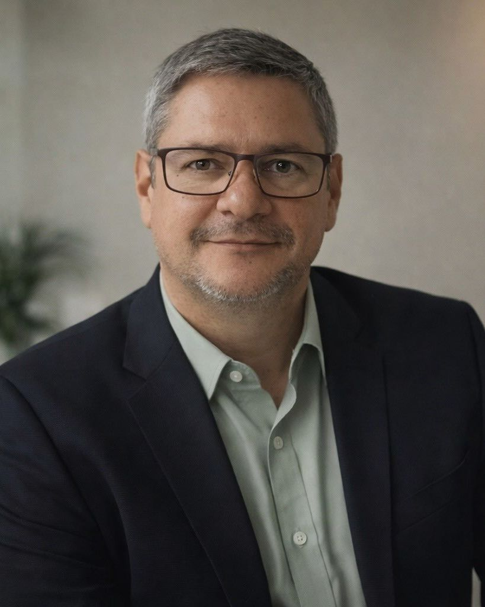
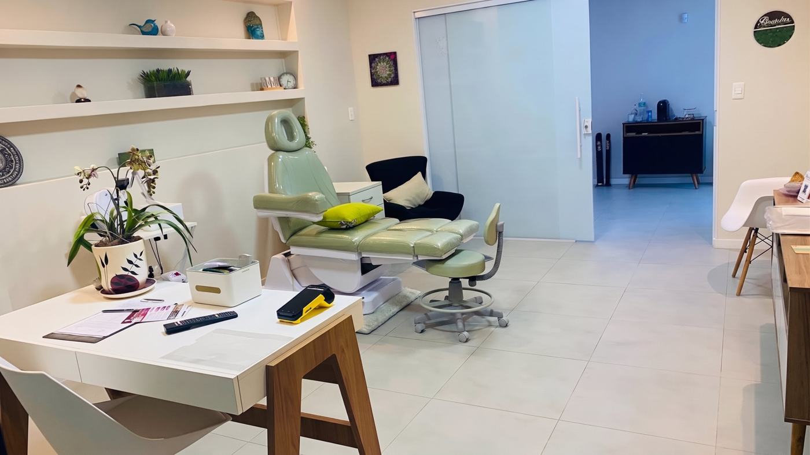

Hipnose Clínica
Acessamos o seu subconsciente de forma segura para desprogramar traumas, medos e gatilhos de ansiedade direto na origem.
Como funciona a hipnoseA sua dor emocional é única, e o tratamento também precisa ser. Através do método exclusivo HipnoQuantec®, unimos a reprogramação da Hipnose Clínica à precisão da tecnologia alemã Quantec® Pro para tratar a raiz do seu problema emocional.

O sofrimento emocional não fica apenas na mente, ele esgota o seu corpo. Talvez você viva com algumas destas realidades:
Os pensamentos aceleram, o pior cenário é sempre o mais provável e o descanso real parece impossível.
Aperto no peito, nó na garganta ou tensão muscular constante que massagem nenhuma resolve.
Você adia decisões, evita encontros e foge de situações porque o desconforto interno é insuportável.
Você percebe o padrão destrutivo, mas sente que não tem forças ou ferramentas para sair dele por conta própria.
Identificar a dor é o primeiro passo, mas isso não precisa ser um diagnóstico definitivo. É exatamente aqui que a nossa conversa começa.
Não aplicamos técnicas padronizadas. O método HipnoQuantec® une três ciências complementares para tratar a raiz do seu sofrimento emocional de forma totalmente personalizada.
Acessamos o seu subconsciente de forma segura para desprogramar traumas, medos e gatilhos de ansiedade direto na origem.
Como funciona a hipnoseReequilibramos o seu corpo físico, liberando emoções e tensões que foram somatizadas (guardadas) nos seus órgãos ao longo dos anos.
Conheça o recursoO grande diferencial. Um suporte tecnológico alemão que atua 24 horas por dia, corrigindo a sua frequência vibracional ao longo de todo o tratamento.
Entenda o diferencialOuvimos a sua história sem julgamentos para entender a fundo o que dói e o que você deseja mudar.
Você recebe um plano de tratamento único, desenhado exclusivamente para o seu momento.
Iniciamos o tratamento integrado com acompanhamento contínuo.
O Quantec® Pro não é apenas um detalhe, é a base do nosso acompanhamento. É ele que sustenta o seu tratamento e nos dá clareza absoluta sobre os seus avanços a cada sessão.
De forma simples e indolor: a partir dos seus dados e de uma fotografia, o sistema faz uma leitura do seu campo vibracional. Ele identifica desequilíbrios causados pela ansiedade e envia frequências de correção à distância. É como ter um suporte terapêutico silencioso trabalhando pela sua paz enquanto você dorme, trabalha ou descansa.
A biocomunicação instrumental é uma terapia integrativa inovadora. Utilizamos os relatórios gerados pelo sistema não como diagnóstico médico, mas como um mapa profundo e valioso para acompanharmos em conjunto a sua evolução emocional.
Esqueça a imagem de palco. Na hipnose clínica você permanece consciente e participa ativamente de cada etapa. Usamos um estado de relaxamento profundo para trabalhar pensamentos, reações emocionais e padrões ligados à ansiedade que vêm te desgastando.
A quantidade e a frequência das sessões são definidas após a nossa primeira avaliação e revistas ao longo do acompanhamento. Não forçamos a busca por traumas escondidos; o trabalho respeita o seu tempo e segue exatamente o que o seu corpo e mente pedirem.
Quero agendar minha consultaO Par Biomagnético usa pares de ímãs posicionados em pontos-chave do corpo para promover o reequilíbrio interno. É um procedimento totalmente seguro, não invasivo e focado em liberar as tensões guardadas.
A sua aplicação respeita precauções individuais e só é incluída quando a nossa avaliação indica que trará alívio real para você. É um suporte integrativo e complementar ao seu cuidado médico tradicional.
A nossa primeira avaliação clínica é um momento profundo e exclusivo, com entrega própria. Nela, analisamos o contexto em que as suas queixas aparecem, os seus padrões recorrentes e aquilo que você realmente deseja alcançar.
É a partir dessa etapa que o seu plano nasce: definimos as sessões de hipnose, a pertinência do Par Biomagnético e a configuração energética do Quantec® Pro.
Agendar consulta agora
Você escolhe o formato que combina mais com a sua rotina. O acompanhamento e os marcos de revisão são os mesmos nos dois casos.
Veja como a combinação de Hipnose, Par Biomagnético e o suporte do Quantec® Pro ajudou estas pessoas a superarem a exaustão emocional e a ansiedade.
Hipnoterapia Clínica e Quantec® Pro
Olá, sou David Severo, especialista em ansiedade e criador do HipnoQuantec®, método que integra Hipnose Clínica e Quantec® Pro, tecnologia de biocomunicação instrumental. Com uma abordagem individualizada, o acompanhamento busca compreender e trabalhar padrões emocionais relacionados à ansiedade, preocupações excessivas, medos e insegurança que podem afetar suas escolhas e qualidade de vida.
O método combina mapeamento individual, recursos complementares e acompanhamento da evolução ao longo do processo.
Agendar consulta agora[Papel no método, ex.: Quantec® Pro e Par Biomagnético]
Foco em liberar o seu corpo das tensões físicas geradas pela ansiedade.
[Formação e registros profissionais verificáveis]
Entenda como o método HipnoQuantec® funciona na prática.
É para isso que existe a primeira avaliação. Se o HipnoQuantec® não for o caminho mais indicado para o seu caso, dizemos isso com clareza.
Sim. É um serviço com entrega própria. Valor, duração e formato são informados no primeiro contato.
Não. Recursos, número de sessões e frequência são definidos para o seu caso e podem ser revistos durante o acompanhamento.
Isso é definido na primeira avaliação, a partir dos seus objetivos, e pode mudar nas revisões.
A duração é definida na sua avaliação, de acordo com o seu caso, e revista ao longo do acompanhamento.
Não. Você permanece consciente, ouve tudo e pode interromper a sessão quando quiser.
Não sozinho. Ele documenta o processo; a evolução é avaliada junto com a sua percepção e os indicadores combinados.
Sim. Atendemos presencialmente em Praia Grande (SP) e online via Zoom, em todo o Brasil.
Não. Nenhum acompanhamento sério pode garantir resultado. As respostas variam de pessoa para pessoa, e os objetivos são revistos com transparência.
Não. Não interrompa tratamentos nem altere medicações sem falar com o profissional de saúde responsável.
Quebrar o ciclo de ansiedade, medos e memórias que pesam começa quando compreendemos exatamente de onde eles vêm. Agende a sua consulta de avaliação e vamos descobrir a raiz do problema.
Quero agendar minha consulta